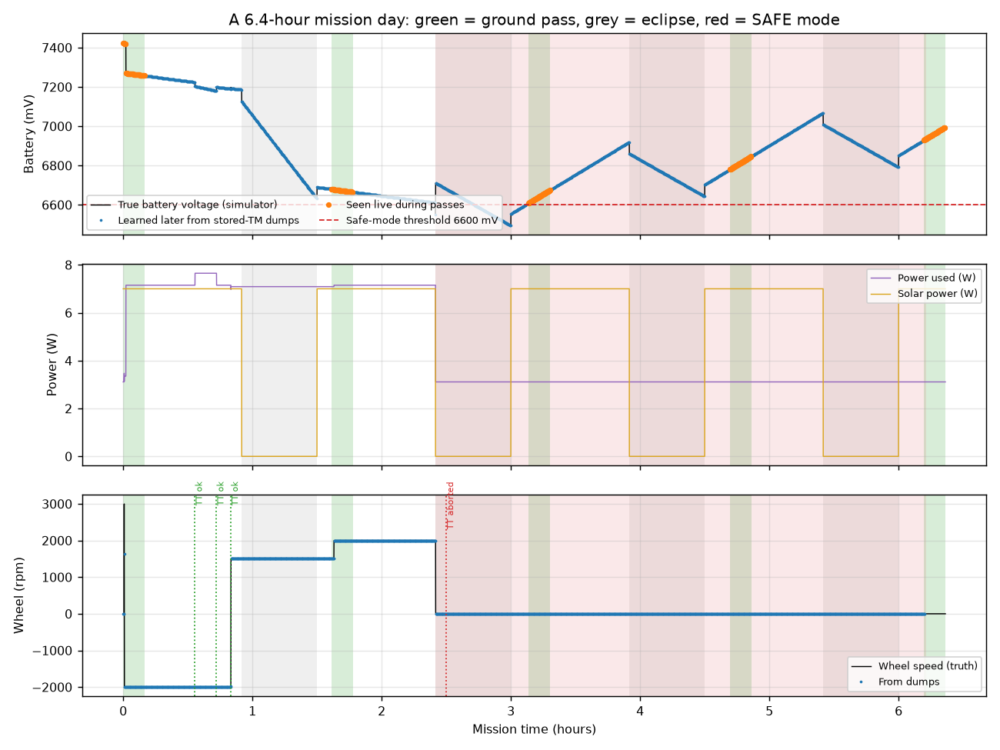
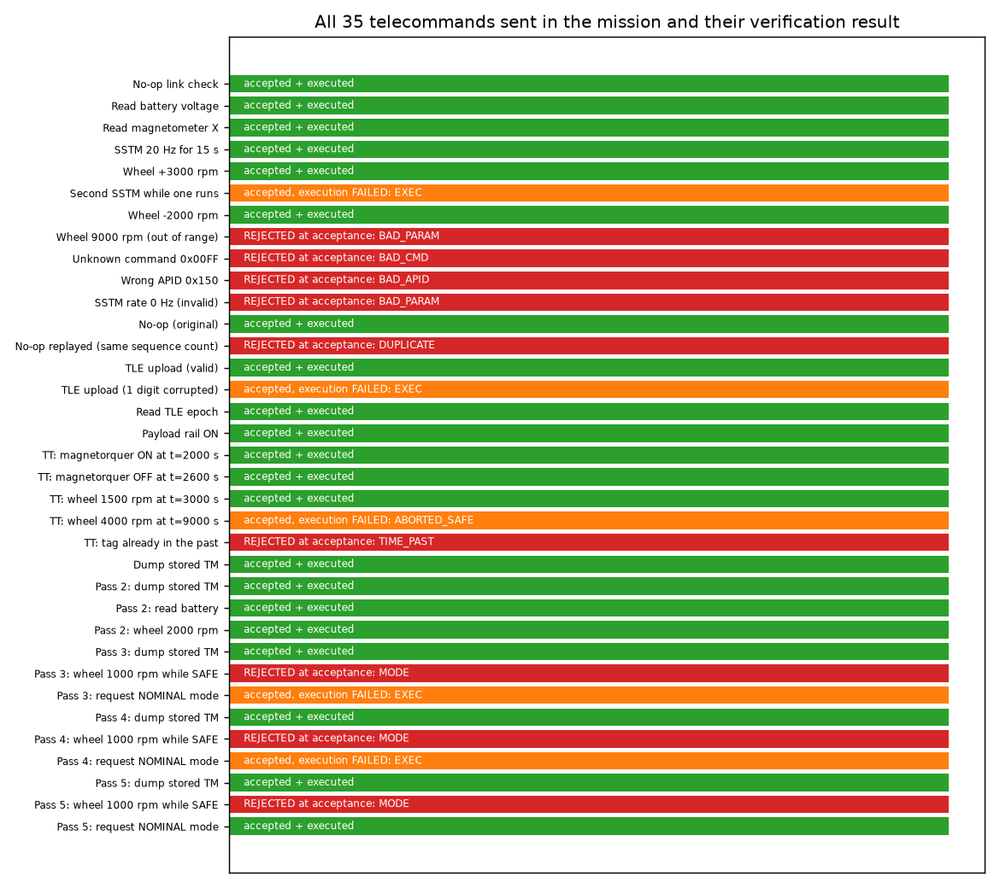
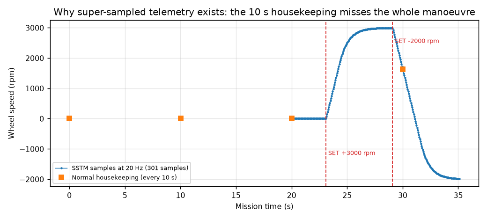
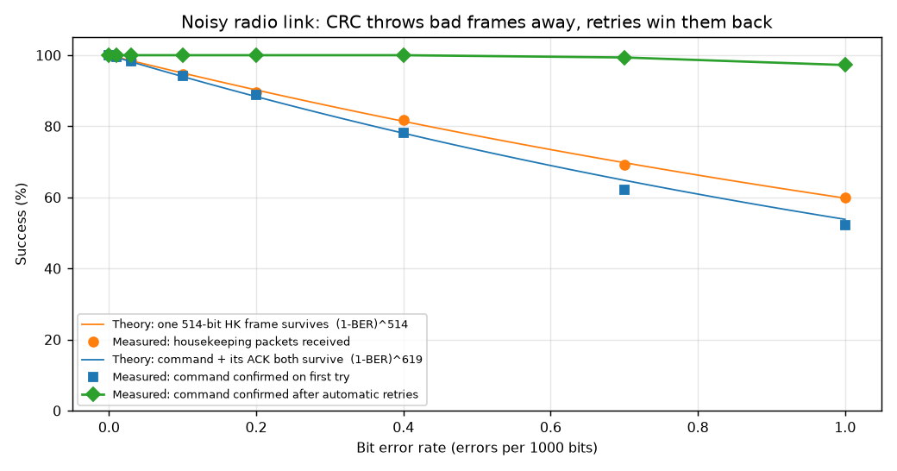

Inspired by my internship on a CubeSat On-Board Computer team. Contains no company or mission data: every number and format here is my own, built on public standards.
A satellite can't be touched after launch. The only way to control it is to send it commands (telecommands, TC) over radio, and the only way to know how it's doing is to read the telemetry (TM) it sends back. This project builds both ends of that conversation and the radio link in between:
| Part | Language | What it does |
|---|---|---|
| Flight software (the satellite's brain) | C99 | Receives radio bits, finds frames, checks them, runs or schedules commands, reports back, looks after the battery, records data while nobody is listening. |
| Ground station | Python | Builds and sends commands, retries when replies go missing, decodes every kind of telemetry into tables. |
| Link + mission simulator | Python | Decides when the satellite is overhead (ground passes), limits speed to 9600 bit/s, and flips random bits to imitate a noisy radio. |
During my internship I documented this kind of system: packet formats, command flowcharts and verification. I wanted to prove I understood it well enough to build the whole thing myself, end to end, and to measure how well it works rather than just describe it.
GROUND STATION (Python) RADIO LINK MODEL ON-BOARD COMPUTER (C)
operator plan ─► CCSDS command ─► HDLC ─► pass on/off ─► bit-level ─► CCSDS parse + CRC
(+ time tag) frame 9600 bit/s deframer 7 safety gates
+ CRC random bit flips ├─ "got it" ACK
tables + plots ◄─ decode ◄─ deframe ◄─── (bit error rate) ◄─ HDLC TX ◄─ ├─ do now / schedule
ACKs, housekeeping, events, high-rate data 2 queues ├─ "done" ACK
battery, wheel, sensors
safe mode, storage, dump
How the two programs stay in step: every 100 ms of simulated time, the ground hands the satellite the uplink bits for that slice. The satellite runs ten 10 ms "ticks" (physics, scheduler, telemetry, transmitter) and hands back the downlink bits it produced. This is called software-in-the-loop testing: the real flight code runs, only the hardware around it is simulated. A 6.4-hour mission runs in about 2 seconds.
| Layer | Job | Where in the code |
|---|---|---|
| HDLC / AX.25 frame | Marks where a message starts and ends on the radio (flag 0x7E), carries addresses, has its own CRC (FCS). | hdlc.c, link.py |
| CCSDS space packet | Says which application it's for (APID), counts packets (sequence count), carries a time, has a second CRC. | ccsds.c, link.py |
| Application data | Command ID + parameters, or telemetry values. | obc.c, station.py |
Full byte-by-byte formats are in docs/ICD.md.
Every number both sides must agree on (APIDs, command IDs, error codes, sizes) lives in one C header, icd.h. The Python ground station reads that same file when it starts. Change a number once and both sides change.
A CRC is a 16-bit fingerprint calculated from the message. The receiver recalculates it; if it doesn't match, the message was damaged. I use CRC-16/CCITT-FALSE (polynomial 0x1021, start 0xFFFF). The standard test: the text "123456789" must give 0x29B1. Both the C and Python versions pass it.
Numbers are sent "big end first" (4500 = 11 94). Instead of raw pointer arithmetic, all reading and writing goes through a small cursor that knows the buffer size and sets an error flag instead of running past the end. A whole family of bugs (overruns, reading garbage) can't happen.
The frame marker 0x7E is 01111110: six 1s in a row. If data ever had six 1s, the receiver would think the frame ended. So the sender adds a 0 after every five 1s, and the receiver removes it. My receiver works one bit at a time like real radio hardware: it counts 1s, drops stuffed 0s, spots flags, and treats seven 1s as "line idle, start again". The unit test feeds it the worst possible data (all 0x7E and 0xFF bytes) and checks it comes out perfect.
Each packet starts with a 6-byte header: type (command or telemetry), APID (the "department"), a 14-bit sequence count, and the length (stored as length minus one, a classic trap). Telemetry carries the satellite's clock in CUC format (seconds + fractions). Commands can carry a time tag saying when to run.
Every command passes through seven gates before anything moves. Fail any gate and it stops there, with a reason sent back to the ground.
| # | Gate | If it fails |
|---|---|---|
| 1 | Frame and packet CRC correct | Thrown away silently: a damaged message can't be trusted, not even its address. Ground notices the missing ACK and retries. |
| 2 | APID is in the routing table | Reject: BAD_APID |
| 3 | Not a repeat of the last sequence count | Reject: DUPLICATE (protects against replays and double execution) |
| 4 | Known command, right parameter length | Reject: BAD_CMD / BAD_LENGTH |
| 5 | Allowed in the current mode | Reject: MODE (e.g. no wheel commands in SAFE) |
| 6 | Every parameter in range | Reject: BAD_PARAM (e.g. wheel 9000 rpm, SSTM rate 0 Hz) |
| 7 | Time tag not in the past, schedule has room | Reject: TIME_PAST / SCHED_FULL |
Then the satellite sends the acceptance ACK and either runs the command now, or stores it in a 16-slot schedule. When it finishes it sends the execution ACK (or an execution failure, like a TLE whose checksum is wrong).
The ground station is a completely separate Python implementation of framing and packets. If two independently written programs understand each other perfectly, the format is unambiguous.

Black line = what really happened inside the simulator. Orange = what the ground saw live. Blue = what the ground learned later from stored-telemetry dumps.
The story: in pass 1 the operator checks out the satellite, tests the wheel, uploads orbit data, switches the payload on and leaves four time-tagged commands. The payload draws more power than the panels give, so the battery falls each orbit. At 2.42 h (8,703 s), out of contact, the voltage crosses 6,600 mV for 3 s and the satellite puts itself into SAFE mode and sheds load. The time-tagged wheel command due at 9,000 s is aborted because of it. In passes 3 and 4 the operator asks for NOMINAL but the battery hasn't recovered enough, so the request is refused (hysteresis). In pass 5 it succeeds.

35 commands: 21 accepted and executed, 9 refused at acceptance (each with the right reason: BAD_PARAM, BAD_CMD, BAD_APID, DUPLICATE, TIME_PAST, MODE), 5 accepted but failed on execution for good reasons (corrupted TLE, overlapping SSTM, aborted in SAFE, battery too low to leave SAFE).

The wheel is commanded to +3000 rpm, then −2000 rpm. Normal 10-second housekeeping (orange squares) catches almost nothing. The 20 Hz SSTM session (301 samples) shows the whole response: the speed ramps at its acceleration limit and settles smoothly.

Each point: about 470 commands and 1,190 housekeeping packets over 20 simulated minutes.
| Bit error rate | Commands OK first try | Theory | After retries | Housekeeping received | Theory |
|---|---|---|---|---|---|
| 0 | 100% | 100% | 100% | 100% | 100% |
| 1 in 10,000 | 94.3% | 94.0% | 100% | 94.6% | 95.0% |
| 4 in 10,000 | 78.1% | 78.1% | 100% | 81.8% | 81.4% |
| 1 in 1,000 | 52.1% | 53.8% | 97.2% | 60.0% | 59.8% |
The theory is simple: a frame of N bits survives if every bit survives, so the chance is (1 − BER)N. A housekeeping frame is 514 bits on air; a command plus its ACK is 619. The measurements match the theory closely, which shows the framing, CRC and decoding behave exactly as designed. Retries turn a 52% link into a 97% one.
| Damage to a 44-byte packet | Trials | Not detected |
|---|---|---|
| 1 bit flipped | 50,000 | 0 |
| 2 bits flipped | 50,000 | 0 |
| 3 bits flipped | 50,000 | 0 |
| A burst of up to 16 bits | 50,000 | 0 |
| Heavy damage (8–20 random bits) | 200,000 | 4 |
CRC-16 is guaranteed to catch small errors and bursts up to 16 bits. With heavy random damage, about 1 in 65,536 slips through by chance (here 4 in 200,000 ≈ 1 in 50,000, as expected). That's why this design has two CRCs (frame and packet): a damaged message would have to fool both.
| Test | What it proves | Result |
|---|---|---|
| C unit tests (27) | CRC check value and bit-flip detection; big-endian round trips and overflow protection; bit stuffing with worst-case data; three back-to-back frames; corrupted frame dropped while the others survive; packet build/parse, time tags, 14-bit sequence limit, CRC and length errors; TLE checksums. | 27 / 27 |
| Python cross-tests (7) | Python and C produce the same bytes; constants come from icd.h; end-to-end NO_OP and wheel command through the real C flight software. | 7 / 7 |
| Mission simulation | Behaviour of the whole system over 6.4 h, compared with the simulator's hidden "truth". | All outcomes as designed |